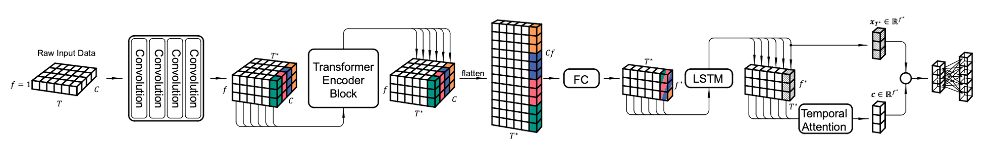
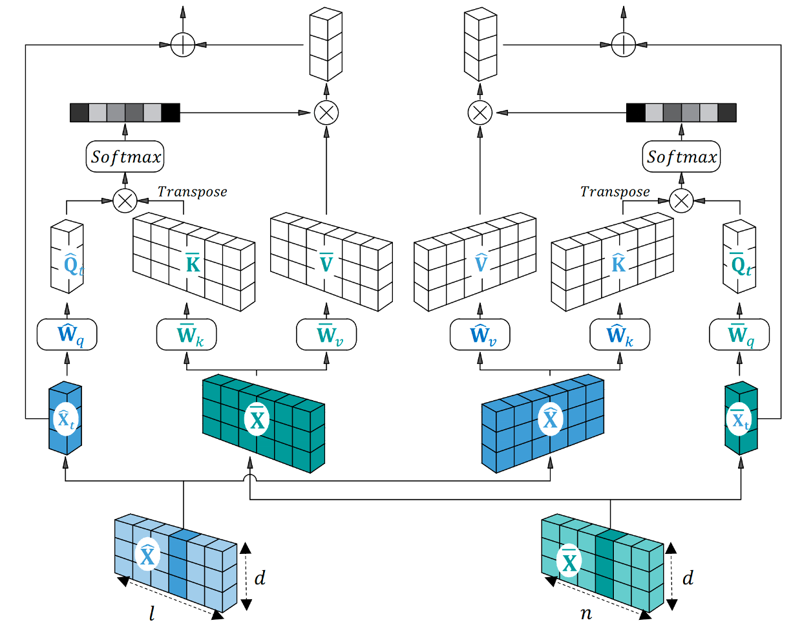
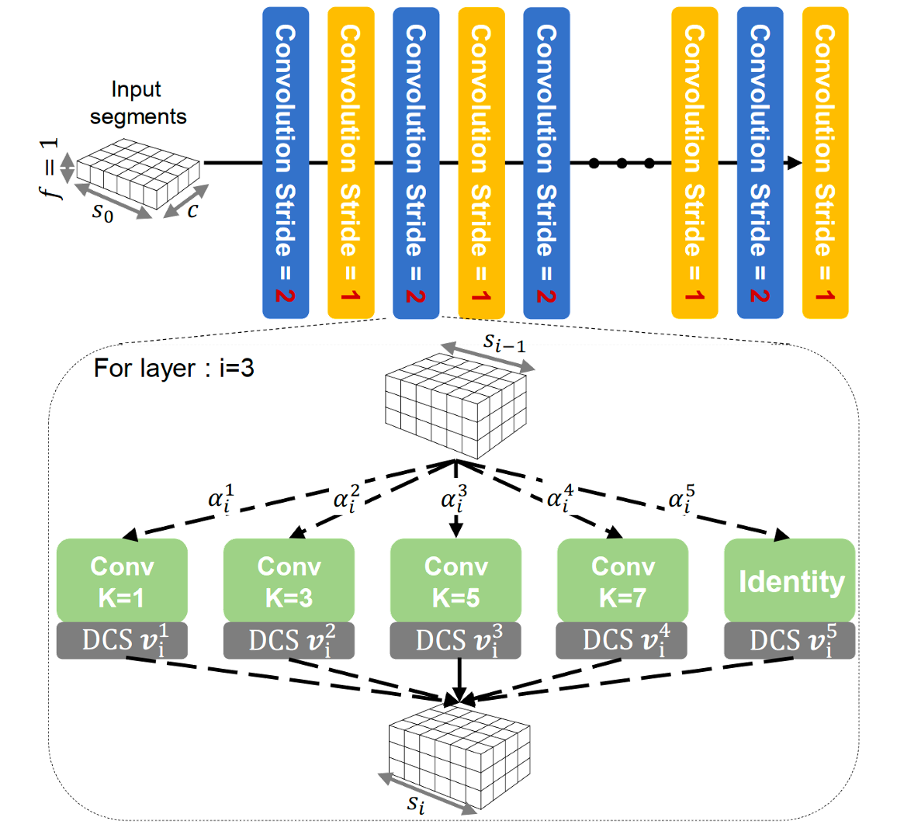

The architecture of neural networks, as non-differentiable
hyperparameters, are difficult to be optimized, and has also
received substantial research interest.
Highly-compact neural architecture design
Targeting to the employment of human activity recognition (HAR) in
edge scenarios, we respect the task characteristics and propose
multiple highly-compact neural architectures. It can perform HAR
with high accuracy and extremely low computational cost.

Figure 1: Structure of TinyHAR.
Multi-modal neural architecture design
Targeting to improving the accuracy of HAR, we propose to employ
both frequency information and time domain signal for HAR tasks. For
this, we proposed a

Figure 2: Proposed HAR model that fuses frequency and time
information through cross-attention.
Hardware-aware NAS
We propose a comprehensive framework that combines neural
architecture search (NAS) with network pruning. By involving the
hardware constraints, i.e., memory requirement and number of
floating point operations, into the loss function, the proposed
framework can automatically yield models that fulfill the
constraints of the target hardware.

Figure 3: A comprehensive framework that combines NAS with
pruning.
Related Materials
Y. Zhou, H. Zhaoet al. TinyHAR - A Lightweight
Deep Learning Model Designed for Human Activity Recognition. In
Proceedings of International Symposium on Wearable Computers
(ISWC), ACM, 2022.
[PDF][Github]
Y. Huang, H. Zhaoet al. Standardizing Your Training Process for Human Activity Recognition Models – A Comprehensive Review in the Tunable Factors. International Conference on Mobile and Ubiquitous Systems (Mobiquitous), Springer Nature Switzerland, 2023.
[PDF]
(submitted) Y. Zhou, H. Zhaoet al.
Cross-Attention Transformer with Multi-Representation for Human
Activity Recognition Using Wearable Sensors. 2024 IEEE
International Conference on Pervasive Computing and
Communications (PerCom). IEEE, 2024.
(submitted) Y. Zhou et al. Enhancing Efficiency in HAR
Models: NAS Meets Pruning. 2024 IEEE International Conference on
Pervasive Computing and Communications (PerCom). IEEE, 2024.